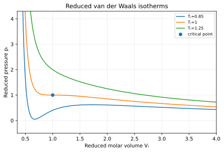

Introduction and Gas Lawsمقدمة وقوانين الغازات
Estimated independent study: 10 hoursزمن الدراسة المستقلة التقديري: 10 ساعات
Why this chapter mattersلماذا يهم هذا الفصل
Physical chemistry turns chemical observations into quantitative models. This opening module establishes the language of systems, state variables, temperature, pressure, amount of substance, and equations of state before contrasting ideal and real gases. These ideas become the thermodynamic vocabulary used throughout the course. [1]
تحوّل الكيمياء الفيزيائية الملاحظات الكيميائية إلى نماذج كمية. تؤسس هذه الوحدة لغة الأنظمة والمتغيرات الحالتية ودرجة الحرارة والضغط وكمية المادة ومعادلات الحالة، ثم تقارن بين الغاز المثالي والغاز الحقيقي. وتمثل هذه المفاهيم أساس اللغة الديناميكية الحرارية المستخدمة في بقية المقرر. [1]
Prerequisitesالمتطلبات السابقة
General chemistry; algebra; logarithms; unit conversion; basic calculus notation.
الكيمياء العامة؛ الجبر؛ اللوغاريتمات؛ تحويل الوحدات؛ أساسيات الترميز التفاضلي.
Learning outcomesنواتج التعلم
- Distinguish system, surroundings, state variables, and intensive/extensive properties.
- Use the ideal-gas and partial-pressure laws with SI units.
- Explain why real gases deviate from ideality and compare van der Waals, Redlich–Kwong, and virial descriptions.
- Interpret critical behavior and the principle of corresponding states.
- التمييز بين النظام والمحيط ومتغيرات الحالة والخواص المكثفة والممتدة.
- استخدام قانون الغاز المثالي وقانون الضغوط الجزئية بوحدات النظام الدولي.
- تفسير انحراف الغازات الحقيقية عن المثالية ومقارنة صيغ فان دير فالس وريدليش–كوانغ والفيريل.
- تفسير السلوك الحرج ومبدأ الحالات المتناظرة.
Key terminologyالمصطلحات الرئيسة
Diagnostic pre-checkفحص تشخيصي
- Identify the relevant SI quantities and units.
- Explain the preceding model this chapter builds on.
- Rearrange logarithmic/exponential relationships safely.
- حدد كميات SI ووحداتها ذات الصلة.
- اشرح النموذج السابق الذي يبني عليه الفصل.
- أعد ترتيب العلاقات اللوغاريتمية/الأسية بصورة سليمة.
Full conceptual explanationالشرح المفاهيمي الكامل
Systems, states, and measurementالأنظمة والحالات والقياس
A thermodynamic system is the part of the universe selected for study; everything else is the surroundings. Open systems exchange matter and energy, closed systems exchange energy but not matter, and isolated systems exchange neither. A macroscopic equilibrium state is specified by a sufficient set of variables such as pressure p, volume V, temperature T, amount n, and composition. State variables are not a record of the process used to reach the state. Intensive properties such as T and p do not scale with system size, whereas extensive properties such as V and mass do. Consistent units are essential because physical chemistry combines data from mechanics, electricity, heat, and spectroscopy. [1]
النظام الديناميكي الحراري هو الجزء من الكون الذي نختاره للدراسة، وما عداه يسمى المحيط. يتبادل النظام المفتوح المادة والطاقة، بينما يتبادل النظام المغلق الطاقة دون المادة، ولا يتبادل النظام المعزول أياً منهما. توصف حالة الاتزان العيانية بمجموعة كافية من المتغيرات مثل الضغط p والحجم V ودرجة الحرارة T وكمية المادة n والتركيب. متغيرات الحالة لا تسجل المسار الذي اتبعه النظام للوصول إلى الحالة. لا تتغير الخواص المكثفة مثل T وp بتغير حجم النظام، بينما تتناسب الخواص الممتدة مثل V والكتلة مع كمية المادة. كما أن اتساق الوحدات ضروري لأن الكيمياء الفيزيائية تجمع قياسات ميكانيكية وحرارية وكهربائية وطيفية. [1]
When checking a calculation, ask first whether the chosen variables define a state and whether all quantities use a coherent unit system. Dimensional analysis often detects mistakes before any numerical interpretation is attempted.
عند مراجعة أي حساب، يجب أولاً التأكد من أن المتغيرات المختارة تصف حالة فيزيائية واضحة وأن الوحدات متجانسة. وغالباً ما يكشف تحليل الأبعاد الخطأ قبل تفسير النتيجة عددياً.
Takeaway: connect the formal model to a physical picture, then state when the model may fail.الخلاصة: اربط النموذج الرسمي بصورة فيزيائية ثم اذكر متى قد يفشل النموذج.
Ideal gas law and gas mixturesقانون الغاز المثالي ومخاليط الغازات
The ideal-gas law pV=nRT is a limiting model for dilute gases whose molecules occupy negligible volume and experience negligible intermolecular forces except during collisions. It combines Boyle's, Charles's, and Avogadro's observations into one equation. Dalton's law treats an ideal-gas mixture as if each component independently occupied the total volume: p_i=x_i p and p=Σp_i. Partial pressure is therefore a composition-weighted contribution to the total pressure, not the pressure in a separate physical compartment. The ideal model becomes increasingly accurate at low density and high temperature, away from condensation. [1]
يمثل قانون الغاز المثالي pV=nRT نموذجاً حدياً للغازات المخففة عندما يكون حجم الجزيئات وقوى التجاذب بينها مهملين تقريباً. يجمع هذا القانون بين علاقات بويل وشارل وأفوجادرو. ويعامل قانون دالتون خليط الغازات المثالية كما لو أن كل مكوّن يشغل الحجم الكلي بصورة مستقلة، بحيث p_i=x_i p وp=Σp_i. لذلك فالضغط الجزئي مساهمة مرتبطة بالتركيب في الضغط الكلي وليس ضغطاً داخل حيز منفصل. تزداد دقة النموذج المثالي عند الكثافات المنخفضة ودرجات الحرارة المرتفعة بعيداً عن التكاثف. [1]
A useful mental test is the density limit: if p→0 at fixed T, most real-gas equations of state must reduce to pV_m≈RT. Failure to recover this limit signals a wrong model or algebraic error.
اختبار ذهني مفيد هو حد الكثافة المنخفضة: عندما p→0 عند T ثابتة يجب أن تعود معظم معادلات حالة الغاز الحقيقي إلى pV_m≈RT. عدم تحقق هذا الحد يدل على نموذج غير مناسب أو خطأ جبري.
Takeaway: connect the formal model to a physical picture, then state when the model may fail.الخلاصة: اربط النموذج الرسمي بصورة فيزيائية ثم اذكر متى قد يفشل النموذج.
Real gases and equations of stateالغازات الحقيقية ومعادلات الحالة
Real gases deviate from ideality because molecules have finite size and interact attractively and repulsively. The van der Waals equation introduces a pressure correction a(n/V)^2 for attractions and a free-volume correction nb for excluded volume. More accurate engineering equations such as Redlich–Kwong modify the temperature and volume dependence, while the virial equation expresses the compressibility factor Z=pV_m/RT as a series in pressure or inverse molar volume. Z<1 commonly indicates that attractive forces dominate the deviation; Z>1 indicates that repulsive or excluded-volume effects dominate. No single simple equation is best at all pressures and temperatures. [1]
تنحرف الغازات الحقيقية عن المثالية لأن الجزيئات لها حجم محدود وتتأثر بقوى تجاذب وتنافر. تضيف معادلة فان دير فالس تصحيحاً للضغط a(n/V)^2 يمثّل التجاذب وتصحيحاً للحجم الحر nb بسبب الحجم المستبعد. وتستخدم معادلات هندسية أدق مثل ريدليش–كوانغ اعتماداً مختلفاً على الحرارة والحجم، بينما تعبر معادلة الفيريل عن معامل الانضغاط Z=pV_m/RT في صورة متسلسلة. غالباً ما يدل Z<1 على غلبة التجاذب، بينما يدل Z>1 على غلبة التنافر أو الحجم المستبعد. ولا توجد معادلة بسيطة واحدة مثالية في جميع مجالات الضغط والحرارة. [1]
The model parameter is not the phenomenon itself. Constants a and b summarize effects over a useful range; they should not be interpreted as exact molecular attractions or exact hard-sphere volumes.
معاملات النموذج ليست الظاهرة ذاتها. فالثابتان a وb يلخصان تأثيرات ضمن مجال مفيد، ولا ينبغي تفسيرهما على أنهما قياس دقيق لقوة تجاذب جزيئية أو حجم كرة صلبة حقيقي.
Takeaway: connect the formal model to a physical picture, then state when the model may fail.الخلاصة: اربط النموذج الرسمي بصورة فيزيائية ثم اذكر متى قد يفشل النموذج.
Critical behavior and corresponding statesالسلوك الحرج والحالات المتناظرة
Below the critical temperature, compression can convert a gas into a liquid through a two-phase region. As the temperature approaches T_c, the distinction between liquid and vapor diminishes until the critical point is reached; above T_c, pressure alone cannot produce a conventional liquid–vapor phase boundary. Reduced variables T_r=T/T_c, p_r=p/p_c, and V_r=V/V_c place different fluids on comparable scales. The law of corresponding states is an approximate similarity principle: substances at the same reduced state often have related compressibility behavior, especially for simple nonpolar molecules. [1]
تحت درجة الحرارة الحرجة يمكن للضغط أن يحول الغاز إلى سائل عبر منطقة ثنائية الطور. ومع الاقتراب من T_c يتضاءل الفرق بين السائل والبخار حتى النقطة الحرجة، وفوق T_c لا يستطيع الضغط وحده إحداث حد طور سائل–بخار تقليدي. تضع المتغيرات المختزلة T_r=T/T_c وp_r=p/p_c وV_r=V/V_c الموائع المختلفة على مقاييس قابلة للمقارنة. ومبدأ الحالات المتناظرة مبدأ تشابه تقريبي؛ فالمواد عند الحالة المختزلة نفسها تظهر سلوك انضغاط متقارباً، ولا سيما الجزيئات البسيطة غير القطبية. [1]
Critical constants are experimentally measurable landmarks. Reduced-variable correlations are useful for estimation, but polar and associating fluids can deviate substantially because their intermolecular interactions are not captured by simple corresponding-state ideas.
الثوابت الحرجة معالم قابلة للقياس تجريبياً. وتفيد علاقات المتغيرات المختزلة في التقدير، لكن الموائع القطبية أو المتجمعة بروابط قوية قد تنحرف بوضوح لأن تآثراتها لا تمثلها علاقات التشابه البسيطة.
Takeaway: connect the formal model to a physical picture, then state when the model may fail.الخلاصة: اربط النموذج الرسمي بصورة فيزيائية ثم اذكر متى قد يفشل النموذج.
Equations, symbols, units & validityالمعادلات والرموز والوحدات والصلاحية
Primary scientific source [1]; conceptual cross-checks [2–7].المصدر العلمي الأساسي [1]؛ مراجعات مفاهيمية [2–7].
Ideal-gas equation of stateمعادلة حالة الغاز المثالي
pV = nRTRelates equilibrium pressure, volume, amount, and absolute temperature for an ideal gas.
تربط ضغط الاتزان والحجم وكمية المادة ودرجة الحرارة المطلقة للغاز المثالي.
- Symbolsالرموز
- p pressure; V volume; n amount; R gas constant; T absolute temperature.p الضغط؛ V الحجم؛ n كمية المادة؛ R ثابت الغاز؛ T درجة الحرارة المطلقة.
- Unitsالوحدات
- p in Pa, V in m³, n in mol, T in K; R=8.314462618 J mol⁻¹ K⁻¹.
- Assumptions / validityالفرضيات / الصلاحية
- Single gas phase; sufficiently low density; equilibrium state.طور غازي واحد؛ كثافة منخفضة بدرجة كافية؛ حالة اتزان.
- Calculation disciplineانضباط الحساب
- State sign convention; convert units before substitution; check dimensions, significant figures, and limiting behavior.اذكر اتفاقية الإشارة؛ حوّل الوحدات قبل التعويض؛ افحص الأبعاد والأرقام المعنوية والسلوك الحدي.
Dalton partial-pressure lawقانون دالتون للضغوط الجزئية
p_i = x_i p ; p = Σ p_iDescribes the pressure contribution of each component in an ideal-gas mixture.
يصف مساهمة كل مكوّن في ضغط خليط غازات مثالية.
- Symbolsالرموز
- p_i partial pressure; x_i gas-phase mole fraction; p total pressure.p_i الضغط الجزئي؛ x_i الكسر المولي الغازي؛ p الضغط الكلي.
- Unitsالوحدات
- Pressure units must be consistent.
- Assumptions / validityالفرضيات / الصلاحية
- Ideal gas mixture; no reaction changing composition during the calculation.خليط غازات مثالية؛ عدم تغير التركيب بتفاعل أثناء الحساب.
- Calculation disciplineانضباط الحساب
- State sign convention; convert units before substitution; check dimensions, significant figures, and limiting behavior.اذكر اتفاقية الإشارة؛ حوّل الوحدات قبل التعويض؛ افحص الأبعاد والأرقام المعنوية والسلوك الحدي.
van der Waals equationمعادلة فان دير فالس
(p + a n²/V²)(V - nb) = nRTSemi-empirical correction for intermolecular attraction and finite molecular size.
تصحيح شبه تجريبي لتأثير التجاذب بين الجزيئات والحجم الجزيئي المحدود.
- Symbolsالرموز
- a attraction parameter; b excluded-volume parameter; other symbols as above.a معامل التجاذب؛ b معامل الحجم المستبعد؛ وبقية الرموز كما سبق.
- Unitsالوحدات
- a and b carry units required to make pressure and volume terms consistent.
- Assumptions / validityالفرضيات / الصلاحية
- One-component fluid; parameters specific to the substance; useful but not universally accurate.مائع أحادي المكوّن؛ معاملات خاصة بالمادة؛ مفيدة ولكنها ليست دقيقة في كل المجالات.
- Calculation disciplineانضباط الحساب
- State sign convention; convert units before substitution; check dimensions, significant figures, and limiting behavior.اذكر اتفاقية الإشارة؛ حوّل الوحدات قبل التعويض؛ افحص الأبعاد والأرقام المعنوية والسلوك الحدي.
Compressibility factorمعامل الانضغاط
Z = pV_m/(RT)Quantifies departure from ideal-gas behavior; Z=1 for an ideal gas.
يقيس الانحراف عن سلوك الغاز المثالي؛ للغاز المثالي Z=1.
- Symbolsالرموز
- V_m molar volume; p,T,R as defined above.V_m الحجم المولي؛ وبقية الرموز كما سبق.
- Unitsالوحدات
- Dimensionless.
- Assumptions / validityالفرضيات / الصلاحية
- Single gas phase.طور غازي واحد.
- Calculation disciplineانضباط الحساب
- State sign convention; convert units before substitution; check dimensions, significant figures, and limiting behavior.اذكر اتفاقية الإشارة؛ حوّل الوحدات قبل التعويض؛ افحص الأبعاد والأرقام المعنوية والسلوك الحدي.

Below the critical temperature the model develops a non-monotonic loop; at Tᵣ=1 the critical inflection lies at pᵣ=Vᵣ=1. The loop is a warning that homogeneous van der Waals theory does not itself describe the stable two-phase region.
تحت الحرارة الحرجة تظهر حلقة غير رتيبة؛ وعند Tᵣ=1 تقع نقطة الانعطاف الحرجة عند pᵣ=Vᵣ=1. وتنبه الحلقة إلى أن نموذج فان دير فالس المتجانس لا يصف وحده منطقة الطورين المستقرة.
Original course illustration based on relationships in [1], Chapter 1, pp. 1–34. Classified as theoretical graph; not measured experimental data. Verified for use.رسم أصلي للمقرر مبني على العلاقات في [1]، الفصل 1، ص 1–34. مصنف كـ theoretical graph وليس بيانات تجريبية مقاسة. تم التحقق من صلاحية الاستخدام.
Download calculated values (CSV)تنزيل القيم المحسوبة (CSV)Fully worked exampleمثال محلول بالكامل
A 1.000 mol ideal gas occupies 24.50 L at 300.0 K. Find the pressure.
يشغل 1.000 مول من غاز مثالي حجماً قدره 24.50 L عند 300.0 K. احسب الضغط.
Convert V=0.02450 m³. p=nRT/V=(1.000)(8.314463)(300.0)/0.02450=101.81 kPa. The value is close to 1 atm, so the magnitude is plausible.
نحوّل الحجم إلى V=0.02450 m³. إذن p=nRT/V=(1.000)(8.314463)(300.0)/0.02450=101.81 kPa. القيمة قريبة من ضغط جوي واحد ولذلك فهي معقولة.
Check: dimensions, sign, significant figures, limiting behavior, and physical plausibility.تحقق من الأبعاد والإشارة والأرقام المعنوية والسلوك الحدي والمعقولية الفيزيائية.
Partially guided exampleمثال موجه جزئياً
Given p, T, and composition for a gas mixture, calculate n_total first, then x_i, then p_i. Check that Σp_i equals p.
عند إعطاء p وT وتركيب خليط غازي، احسب أولاً n الكلية ثم x_i ثم p_i، وتحقق من أن مجموع الضغوط الجزئية يساوي الضغط الكلي.
Reveal problem-solving checklistإظهار قائمة التحقق للحل
- List given values with units.
- Name the target quantity.
- Choose and justify the governing equation.
- Convert units.
- Show intermediate steps.
- Check dimensions and plausibility.
- اكتب القيم مع الوحدات.
- حدد المطلوب.
- اختر المعادلة وبررها.
- حوّل الوحدات.
- اعرض الخطوات الوسيطة.
- افحص الأبعاد والمعقولية.
Independent exercisesتمارين مستقلة
Model marking guidanceإرشادات التصحيح
Credit is awarded for the governing principle, assumptions, algebra, units, transparent substitution, appropriate significant figures, interpretation, and stated limitations. A final number without method earns only partial credit.
تُمنح الدرجات للمبدأ والفرضيات والجبر والوحدات والتعويض الواضح والأرقام المعنوية والتفسير والقيود. الرقم النهائي دون منهج يحصل على جزء فقط من الدرجة.
Practical / computational activityنشاط عملي / حاسوبي
Gas-law model auditتدقيق نماذج قوانين الغازات
Use a spreadsheet to compare ideal-gas, van der Waals, and virial predictions over a stated pressure range. Record assumptions, plot Z versus p, and identify where the models diverge. Use textbook parameters or instructor-supplied verified parameters; do not invent fitted constants.
استخدم جدول بيانات لمقارنة تنبؤات الغاز المثالي وفان دير فالس والفيريل ضمن مجال ضغط محدد. سجّل الفرضيات وارسم Z مقابل p وحدد مناطق اختلاف النماذج. استخدم معاملات موثقة من الكتاب أو يزوّدك بها المدرس ولا تنشئ ثوابت ملاءمة غير موثقة.
Computational activity; no chemical hazard.
نشاط حاسوبي؛ لا توجد مخاطر كيميائية.
- Define purpose, variables, controls, apparatus/software, and calibration.
- Record raw data with units and uncertainty.
- Plot against the governing model and discuss residuals/discrepancies.
- Do not fabricate replacement results; label sample data explicitly.
- Document waste disposal when chemicals are used.
- حدد الغرض والمتغيرات والضوابط والأجهزة/البرمجيات والمعايرة.
- سجل البيانات الخام مع الوحدات وعدم اليقين.
- قارن الرسم بالنموذج الحاكم وناقش البواقي/الانحرافات.
- لا تختلق نتائج بديلة وسم بيانات العينة بوضوح.
- وثق التخلص من النفايات عند استخدام مواد كيميائية.
Modern applicationتطبيق حديث
Supercritical-fluid processing uses the disappearance of a sharp liquid–vapor boundary above the critical point to tune density and solvent power continuously with pressure and temperature.
تستفيد عمليات الموائع فوق الحرجة من اختفاء الحد الحاد بين السائل والبخار فوق النقطة الحرجة، مما يسمح بضبط الكثافة والقدرة الإذابية بصورة مستمرة بالضغط والحرارة.
Case studyدراسة حالة
A process engineer must decide whether an ideal-gas model is adequate for a compressed-gas stream. The decision should be based on reduced conditions, expected Z, and required accuracy—not on habit.
يتعين على مهندس العمليات تقرير ما إذا كان نموذج الغاز المثالي مناسباً لتيار غاز مضغوط. يعتمد القرار على الشروط المختزلة والقيمة المتوقعة لـ Z والدقة المطلوبة، لا على الاستخدام الاعتيادي للنموذج.
Common misconceptionsمفاهيم خاطئة شائعة
- Treating partial pressures as separate volumes rather than contributions to one mixture.
- Using Celsius directly in pV=nRT.
- Assuming van der Waals is always more accurate than every other equation of state.
- مفهوم خاطئ: Treating partial pressures as separate volumes rather than contributions to one mixture.
- مفهوم خاطئ: Using Celsius directly in pV=nRT.
- مفهوم خاطئ: Assuming van der Waals is always more accurate than every other equation of state.
Common examination errorsأخطاء اختبار شائعة
- Mixing L·atm and SI values of R without conversion.
- Failing to state whether a graph is conceptual, calculated, or measured.
- Using a real-gas correction outside its validity range without comment.
- خطأ شائع: Mixing L·atm and SI values of R without conversion.
- خطأ شائع: Failing to state whether a graph is conceptual, calculated, or measured.
- خطأ شائع: Using a real-gas correction outside its validity range without comment.
Summary & revision sheetالملخص وورقة المراجعة
- Explain every core concept in your own words.
- Reconstruct key equations and annotate symbols/units.
- Sketch and interpret the chapter figure from memory.
- Redo the worked example with altered inputs.
- State at least two model assumptions or limitations.
- اشرح كل مفهوم أساسي بكلماتك.
- أعد بناء المعادلات وعرّف الرموز والوحدات.
- ارسم شكل الفصل وفسره من الذاكرة.
- أعد المثال بقيم مختلفة.
- اذكر فرضيتين أو قيدين على الأقل.
Mastery target: explain → calculate → interpret → critique → connect.هدف الإتقان: اشرح ← احسب ← فسّر ← انقد ← اربط.
Knowledge check & immediate feedbackفحص المعرفة والتغذية الراجعة الفورية
At very low pressure, the compressibility factor of a simple gas should approach:
عند ضغط منخفض جداً، يجب أن يقترب معامل الانضغاط لغاز بسيط من:
Source note & figure creditملاحظة المصدر واعتماد الشكل
Principal source: [1], Chapter 1, pp. 1–34. Supporting checks: [2–7]. Figure 1 is original course artwork; no external copyrighted figure is reproduced.
المصدر الرئيس: [1]، الفصل 1، ص 1–34. مراجعات داعمة: [2–7]. الشكل 1 عمل أصلي للمقرر ولا يعيد نشر شكل خارجي محمي.